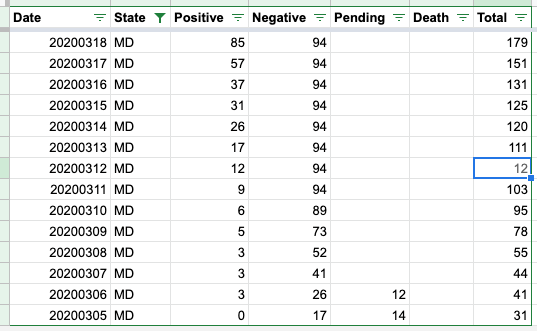
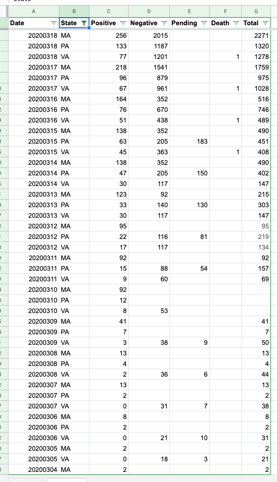
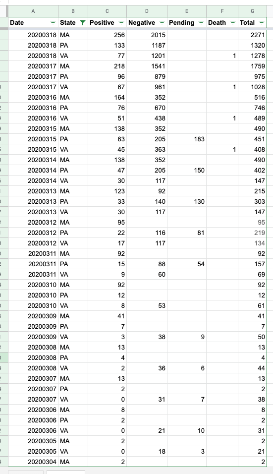
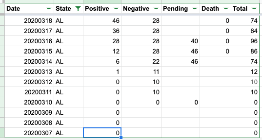
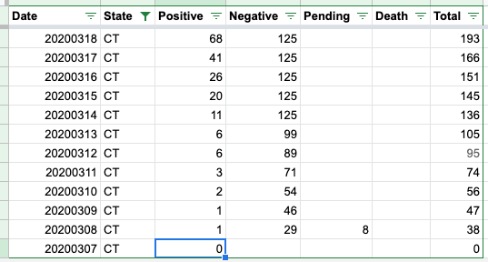
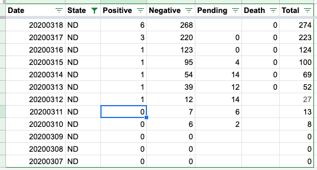
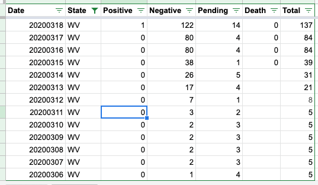

Some anomalies in state daily API data
There are some anomalies in the data from: https://covidtracking.com/api/states/daily
Might be an API problem, since some vars aren’t showing up at all:
- MA 3/10 is missing all values except ‘positive’
- PA 3/10 is missing all values except ‘positive’
- VA 3/10 is missing all values except ‘positive’ and ‘negative’
Might be a data problem, since nulls are being reported amid very few other nulls:
- AL 3/7 is reporting ‘null’ for positive (should be 0)
- CT 3/7 is reporting ‘null’ for positive (should be 0 or 1)
- ND 3/11 is reporting ‘null’ for positive (should be 0 or 1)
- WV 3/11 is reporting ‘null’ for positive (should be 0)
Finally, the ‘total’ testing value for MD 3/12 is just bizarre and most likely incorrect. The sequence surrounding that value (12) looks like: … 78, 95, 103, 12, 111, 120, 125 … See what I mean?
I’ve been told that since ‘pending’ is reported as part of ‘total’ that means that the cumulative state test totals will sometimes decline (jump down) over time, which is the case for a handful of states, but MD 3/12 is the only situation (to my eyes) that looks more like an error.
Comments
The reason I highlighted those nulls is because they’re the only 4 ‘positive’ nulls in the entire (!) dataset, and they’re also all surrounded by either 0s or 1s on either side.
Okay fair enough we should definitely pull forward the previous day’s value in each of those cases then.
Original MD data: 
Fixed MD data:
Here is the original Total data missing for PA, VA, MA: 
Here it is fixedfor PA, VA, MA: 
For the other data points that just have nulls:    
Those 3/10 missing totals definitely seem like a bug, as does MD on 3/12. Thanks for catching them!
Those nulls for positives are likely due to my choice to not put 0 when the state was not reporting anything. Many states were slow to put out any data at all, and I wanted to distinguish that case from an explicit 0.